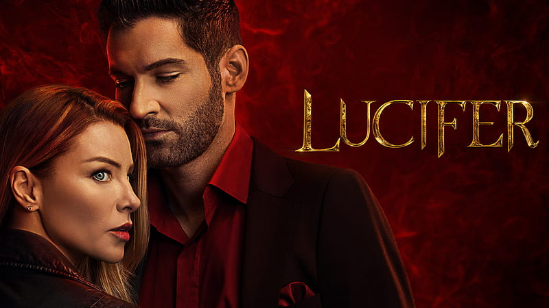
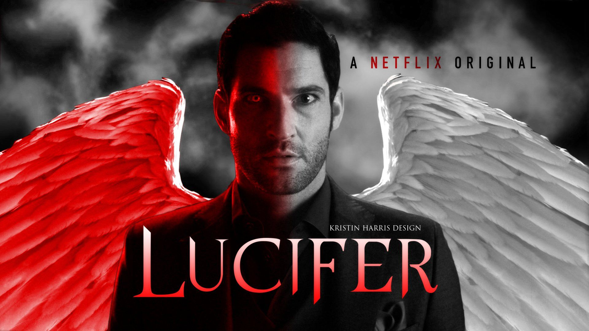

Lucifer is an American urban fantasy television series developed by Tom Kapinos that began airing on January 25, 2016, and concluded on September 10, 2021. It revolves around Lucifer Morningstar (Tom Ellis), an alternate version of the DC Comics character of the same name created by Neil Gaiman, Sam Kieth, and Mike Dringenberg. In the series, Lucifer is the devil but abandons Hell to run a nightclub in Los Angeles, subsequently experiencing massive life changes when he becomes a consultant to the Los Angeles Police Department. The supporting cast includes Lauren German, Kevin Alejandro, D. B. Woodside, Lesley-Ann Brandt, Rachael Harris, and Aimee Garcia.
Seasons
Season-1
Episode-1
1. Pilot
After an old acquaintance meets a violent fate, the charming Lucifer vows revenge on the perpetrators and makes an unexpected alliance.
Episode-2
2. Lucifer, Stay. Good Devil
While feeling the heat to return to hell, Lucifer makes time to investigate how overeager paparazzi contributed to a young man's death.
Episode-3
3. The Would-Be Prince of Darkness
A pro quarterback on the brink of superstardom wakes to a grisly discovery and calls on Lucifer to help prove his innocence.
Season-2

Episode-1
1. Everything's Coming Up Lucifer
While investigating the murder of a stand-in actress, Chloe attempts to solve the mystery of Lucifer's origin once and for all.
Episode-2
2. Liar, Liar, Slutty Dress on Fire
Lucifer suspects his newly arrived mother may behind a vicious crime. Later, Lucifer learns a bit about his hellish history.
Episode-3
3. Sin-Eater
Lucifer joins Chloe and Dan to investigate a murder tied to an online video site and later makes a decision about his mother's punishment.
Season-3

Episode-1
1. They're Back, Aren't They?
Lucifer tries to make sense of his new accessories. Meanwhile, newcomer Lieutenant Marcus Pierce gets off to a rocky start with his coworkers.
Episode-2
2. The One with the Baby Carrot
As Lucifer and Chloe investigate a new case, Pierce's past comes into focus. Linda worries that her favorite patient isn't caring for himself.
Episode-3
3. Once Upon a Time
In an alternate dimension, Lucifer gets to experience what his life would have been like had he never met Chloe.